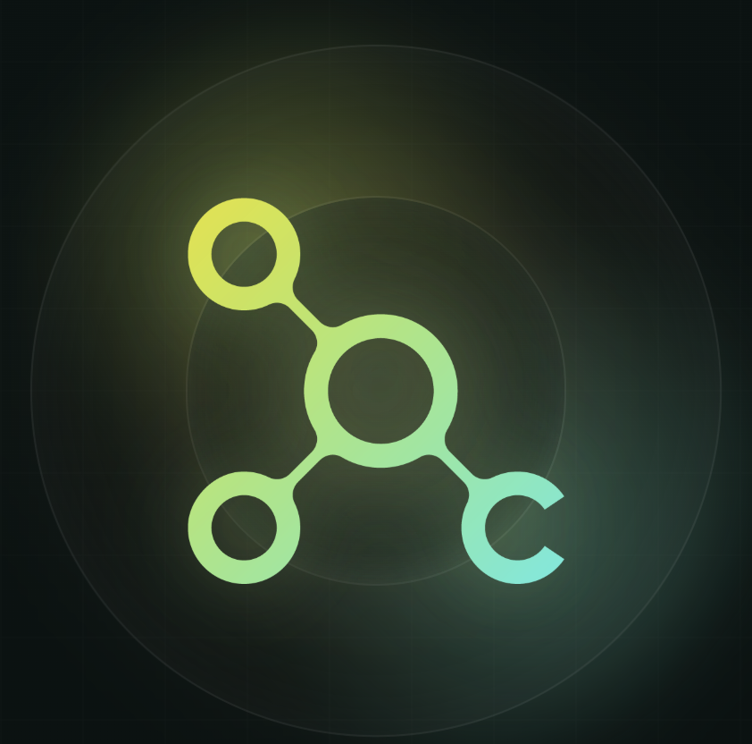
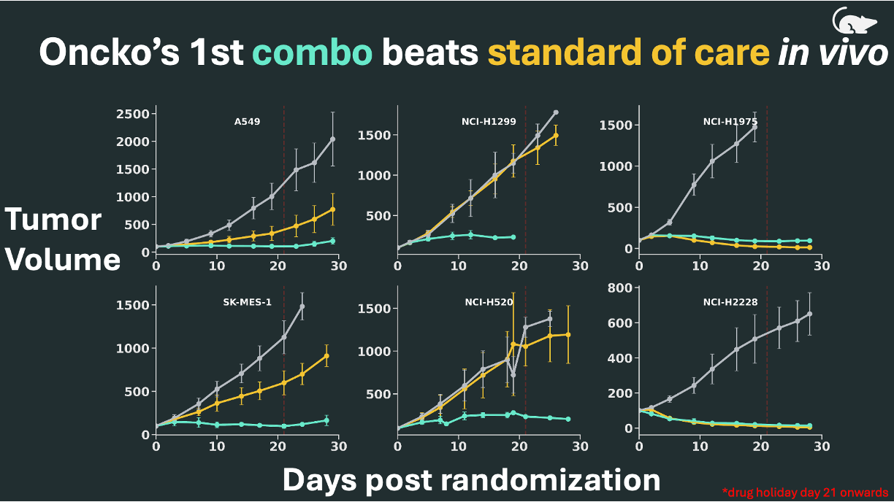
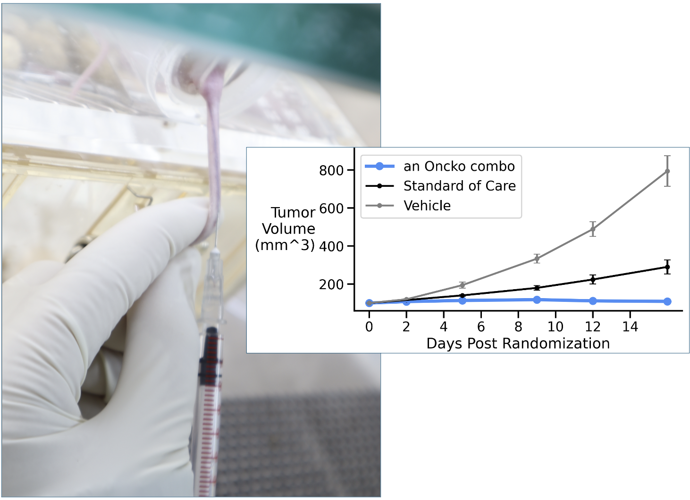
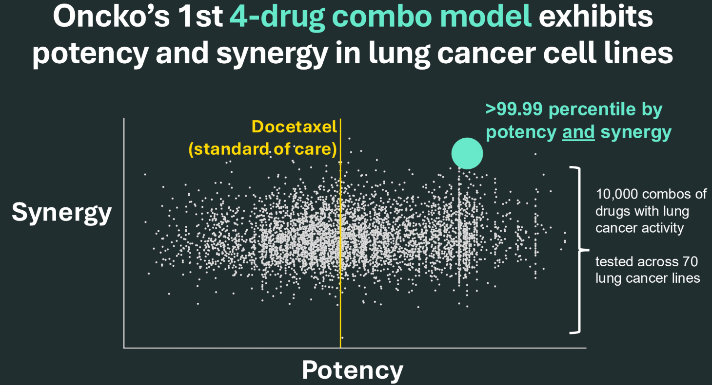
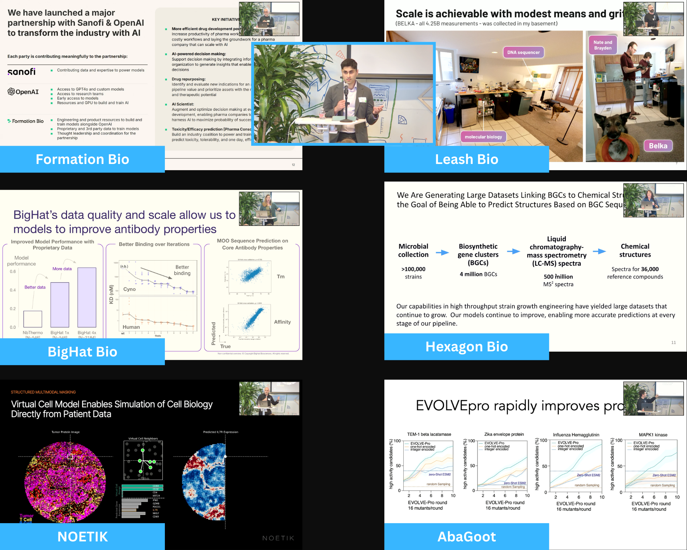
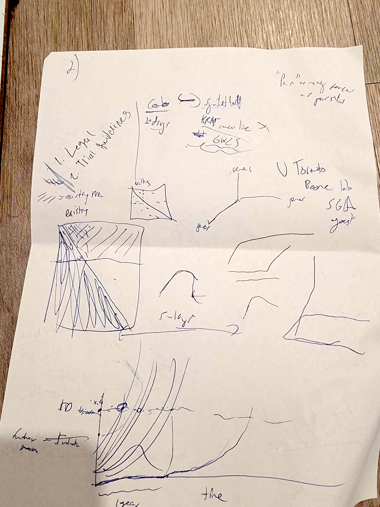

TBD
March 2026
Do what we say, say what we do
TBA

TBD
TBA
An Oncko scientist scales productivity across multiple CRO executed projects.
2025: 4 scientists → 10 combos tested. 2026 target: 100 combos tested
That’s 10× more output. But we've only grown our team by 1.34x.
Instead of 90% internal R&D, we’re flipping to ~90% CRO execution, where each Oncko scientist designs experiments and coordinates with multiple CRO teams running experiments in parallel.
Think: small internal team, large external engine.
We also recently added two exceptional senior leaders to help scale:
Glenn (data generation → combo nomination)
Tim (combo validation → development)
By the end of March we’ll have launched >$400k in CRO science across 5 projects, compared to ~$70k in only 1 project in all of 2025. As per our Scale ⭤ Translation thesis from our 2026 Operating Plan, we will test more combos, generate more data → get better predictions → and ultimately better cancer drugs.
Oncko's 2026 approach involves rapid evolutionary experimental cycles.
As we enter 2026, we’re sharpening our strategy around 2L NSCLC — patients whose tumors have already evolved beyond frontline therapy. What remains is resistant, heterogeneous, and poorly understood. These patients are out of good options.
Importantly, this evolved resistance is poorly represented in most conventional preclinical models, from standard cell lines to many xenografts. Oncko intends to address this by learning from cancer’s ability to evolve — and using those insights to build better therapies.
2025 → 2026 (targets)
1 nomination strategy → 10 orthogonal strategies evaluated in parallel
In vitro killing alone → adding clinical and mechanism data
10 combos tested in xenografts → 100
1 program ready to advance past initial screen → 2 programs with pharma/investor-grade preclinical packages and defensible IP

The October combo looked good across all 6 models and is proceeding to IP filings and optimization.
2025 summary: we engineered 2 separate drug combos that beat standard of care TGI >70% across multiple mouse xenograft models, built an amazing team + advising team, and brought in additional funding.

1st cell line derived xenograft (CDX) mouse was dosed with an Oncko combo November 4th
5 days later we had our 1st measurements that our approach has the potential to beat standard of care by >50% in xenografts (a major 2025 milestone). If this drug continues to look good in this model as well as the 6 others it is being tested in, that would be a big inflection for Oncko!

Our 1st combo possesses top potency and synergy in vitro
Oncko's path to clinic looks something like this:
A) in vitro screen → B) in vitro hit validation → C) mouse xenograft validation → D) toxicity/IND package → E) human trials
Normally biotechs take ~6-8 years to go from A→E. We're planning to compress this timeline significantly. To this end, we made big progress towards A→C in the last two months and will soon be able to rapidly iterate across them towards finding optimal combo drugs!

Our AI x bio JPM event drew 100 people spanning pharma, investors, founders, and AI experts
2025 Milestones are set: Abridged version
show in vitro combo screens are reproducible and predicts PDX/clinical trial outcomes
achieve >50% improvement vs. Standard of Care for a novel drug combo (in vitro and in vivo)..and 1 order of magnitude in re: “log kills” i.e. 99% to 99.9% of clones killed

Back of the napkin moment in SF's Chorus Apartments Cocktail bar summer 2024
After a couple months of discussions to build strategy and fundraise, we signed a pivitol investment in November allowing us to start building Oncko.